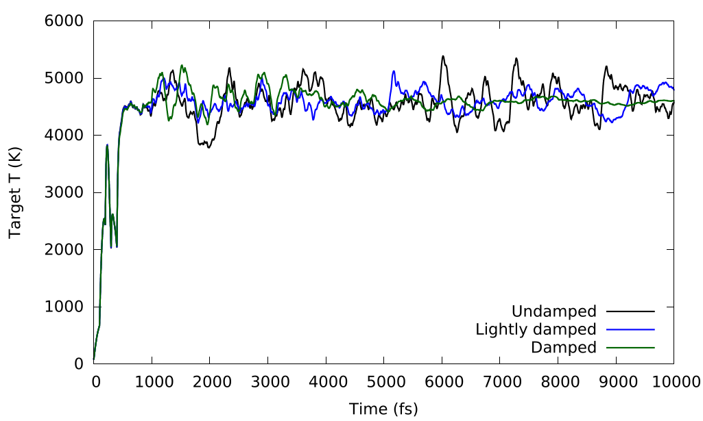
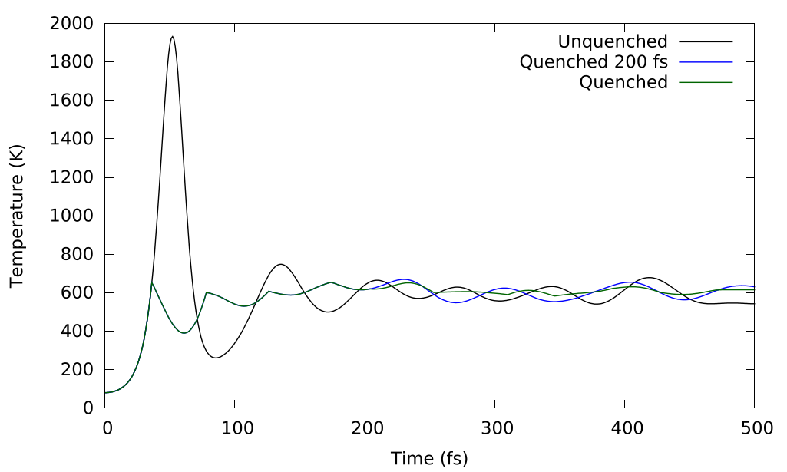
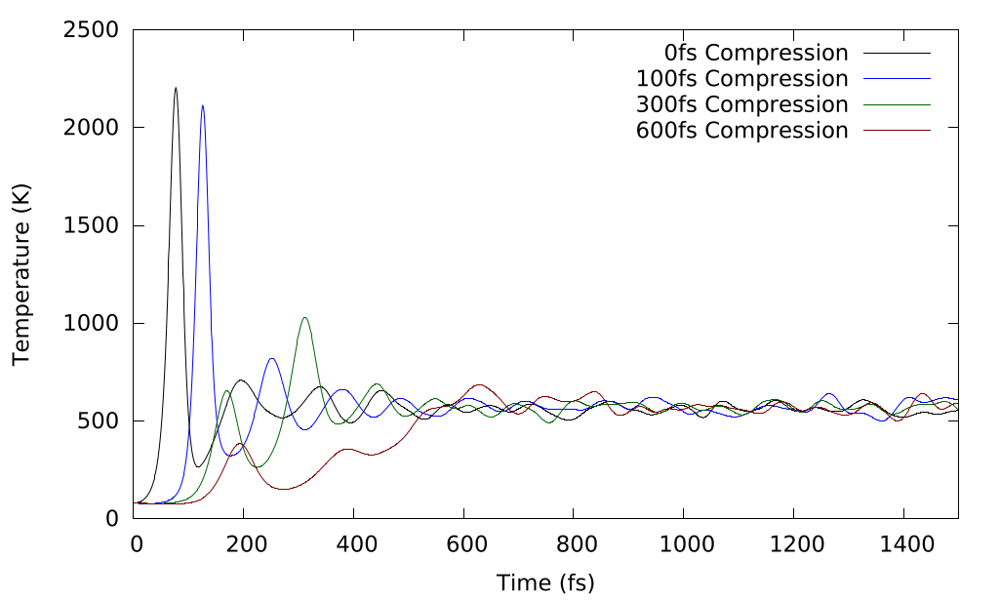

Hugoniostat 冲击波模拟方法
Hugoniostat 是一种通过伪系综模拟密度泛函理论（DFT）中冲击波的方法，该方法将温度和压力驱动至赫诺伊特线上的某一点。已实现两种赫诺伊特态方法。Maillet 提出的恒容赫诺伊特态（NVHug）。 等1 以及Ravelo的恒压/应力胡戈诺斯塔特 等2.
NVHug 和 NPHug 算法是一种伪系综方法，这意味着它们不严格守恒某个形式上的物理量，而是将系统驱动至期望的状态。
算法以其他 CASTEP 系综的方式实现，并使用了许多通用的 MD 关键字 并且可以与任何标准的 CASTEP 恒温器方法一起使用（参见 基础).
扩展Hugoniostat方法的详细信息可参见博士论文3 其中，这些方法最初是在 CASTEP 中实现的。
霍贡尼奥状态方程
霍贡尼奥曲线描述了系统的冲击态
其中下标 1 并且 2 参考激波前前方和后方的状态， \rho{} 是流体的质量密度， u 是流体速度， P 是压力和 h 是比焓（单位质量）。它也可以用冲击速度来表示：
其中 u_{s} 是冲击速度和 e 是比内能。通过将质量守恒和动量守恒代入能量守恒方程，可以推导出洪诺特方程：
其中以单位质量为基础可得：
NVHug
NVHug 方法在压缩比为 md_hug_compression 在指定方向上 md_hug_dir （默认情况下 ISO热带）。
NVHug 所遵循的运动方程（采用 Nose-Hoover 格式）为：
其中 \chi{} 是恒温器向系统传递的热量流， \nu{} 是恒温器与系统之间的耦合， C 是一个单位为能量的缩放常数，用于保持系统尺寸无关性
其中 t_{0} 在系统尚未被压缩之前（即平衡态之前），我们认为当前状态与赫诺伊特状态的偏离程度称为赫诺伊特估计值：
示例
.param
task : molecular dynamics
md_ensemble : HUG
md_hug_dir : ZDIR
md_hug_method : NVHug
md_temperature : 70 K
md_thermostat : langevin
md_hug_t : 10 fs
md_ion_t : 50 fs
md_delta_t : 1 fs
md_eqm_t : 500 fs
md_num_iter : 1000
md_hug_compression : 0.7
NPHug
支配NPHug Hugoniostat（采用Nose-Hoover形式）的运动方程为：
其中 \alpha{} 指的是沿晶格矢量方向的一个分量 \vec{h}, \nu{}_{H} 是恒温器与系统的耦合， \nu{}_{P}{} 是恒压器活塞与系统的耦合， \sigma{} 是目标压强张量和 P 是瞬时总压力张量， D 是用于保持系统尺寸无关性的压力单位比例常数，Ravelo 等.2 建议平衡体模量（B_{0}) .
示例
.param
task : molecular dynamics
md_ensemble : HUG
md_hug_dir : ZDIR
md_hug_method : NPHug
md_temperature : 70 K
md_thermostat : langevin
md_hug_t : 10 fs
md_ion_t : 50 fs
md_delta_t : 1 fs
md_eqm_t : 500 fs
md_num_iter : 1000
.cell
加速平衡
由于平面波密度泛函理论（DFT）计算的性质以及力的计算方式，DFT对结构的快速变化非常敏感，在极高温度下可能变得不稳定，且当原子彼此靠近时，DFT中关于内层电子非极化性的基本假设将不再成立。
与经验力场相比，密度泛函理论（DFT）的计算也十分昂贵，因此尽可能减少计算量至关重要。加速平衡方法的存在是为了使冲击波计算过程更快、更稳健。
阻尼
拉韦洛 等.2 建议对“温度/压力”恒温器/恒压器的“速度”施加阻尼，以防止超过理想的巨大气体值。这使得恒温器的NVHug公式为：
以及同样适用于NPHug公式中的运动更新方程：
其中 \beta{}_{H} 并且 \beta{}_{p} 分别是用户定义的热流和恒压器活塞的阻尼系数，选择这些系数以实现霍贡尼态的临界阻尼。
相关关键词
-
beta_t：（物理的）1/fs 中用于 Hugoniostat 温度耦合的阻尼参数
-
beta_h：（物理的）1/fs 中 Hugoniostat 压力耦合的阻尼参数
示例
%block devel_code
md: BETA_T=0.1 BETA_H=0.1 :endmd # Lightly Damped
md: BETA_T=0.3 BETA_H=0.3 :endmd # Damped
%enblock devel_code

阻尼对朗格万方案（式4.2）在60%体积的500原子伦纳德-琼斯单元中的影响，该单元具有过强的虎克尼奥斯特耦合（\nu{}_{H}) 的 0.1fs^{−1} 以及一个阻尼因子（\beta{}_{H}) 的 (无阻尼) 0.0，(轻阻尼) 0.1，(有阻尼) 0.3。
淬火
淬火是阻尼的一种更极端形式，当热/压强控制器的“加速度”改变符号时，“速度”会被重置为0。由于这种操作并不直接耦合到系统内部，因此不会破坏系统的内部动力学，反而可能加快收敛并使温度更加稳定。特别是在NVHug的初始阶段，当系统初次压缩时，温度和压力可能会出现剧烈波动。
淬火仅在平衡阶段发生，这一点由确定。 md_eqm_t
相关关键词
-
quench_t：（逻辑的）快速平衡时改变方向时的淬火恒温器速度
-
quench_p：（逻辑的）快速平衡时改变方向时淬火恒压器的速度
示例
%block devel_code
md: QUENCH_T=T :endmd # Quench Thermostat
md: QUENCH_P=T :endmd # Quench Barostat
%enblock devel_code

淬火对一个70%体积、500个原子的伦纳德-琼斯系统的温度的影响，未淬火线（黑色）在初始阶段表现出较大的瞬态变化，而淬火线（蓝色和绿色）则消除了这一瞬态，但以“非物理”的温度动力学为代价；当淬火在平衡后关闭时，这种非物理的温度动力学便被消除（蓝色）。需要注意的是，三条曲线最终都收敛到相同的温度。
稳态压缩
稳态压缩将系统在NVHug压缩过程中分阶段进行，而非瞬时压缩，以使系统更平稳地达到平衡，并避免瞬时的温度和压力峰值。这一观点也在Ravelo中提出。 等.2 作为一种平滑平衡过程的方法。
k点和波函数样本是根据压缩后的单元格确定的，以便在大多数计算过程中NVHug能更高效地运行。
compression_t 并且 compression_rate 是两种指定同一事物的方式，无论是作为 %/fs 或者 fs/%当压缩达到目标压缩量时，压缩将停止。对于稳态压缩，通常最好将系统压缩的时间略短于平衡期，以确保在测量数据之前系统已处于一个有效的稳态。
compression_block 使系统在压缩之间有时间达到平衡，通过每次压缩 compression_block 步骤而不是每一步（尽管在每个压缩步骤中的压缩量会更大）。 compression_rate 并且 compression_t 得以保留）。
相关关键词
-
compression_t：（物理的）压缩过程应持续的时间，用于压力梯度计算中 fs.
-
compression_rate：（物理的）单元体积减小的速率作为 \tfrac{\%}{fs}.
-
compression_block：（整数）每次单元格压缩之间的时间步数，用于平稳地升高压力。
示例

恒定压缩对平衡过程中减少初始瞬态的影响。预测-校正（实验）
由于密度泛函理论（DFT）的特性，许多重要性质（例如波函数）都与模拟单元相关，因此通常更高效地使用固定单元计算，以减少因重新计算所有与单元相关的性质而带来的计算开销。这意味着在CASTEP中使用NVHug通常更为高效，然而，我们通常更关心的是在赫诺特曲线上特定压力点的采样，而非某一压缩状态的影响。
预测-校正方法通过利用赫诺伊特曲线上的历史数据，自动进行一系列NVHug模拟，以追踪赫诺伊特曲线直至达到某一压力。
它使用之前的 hist_len 拟合曲线以预测何种压缩可达到目标压力并进行计算。绘制出赫诺伊特曲线至 target_p 无论是哪一个 steps 步骤或步长为 pstep. E.g.
err 确定实际压力必须接近目标压力的程度，相对于实际的目标压力。例如
该 reuse 关键词使P-C使用前一步的最终状态作为当前步骤的初始状态。包含温度/压力和原子位置，以加快平衡过程。
max_delta 限制了P-C在各阶段之间可承受的压缩步长，以确保在初始步骤中（由于数据点不足导致估算受限）对于非常刚性的材料不会出现极端的温度或压力跃变，从而避免密度泛函理论的基本假设失效而导致系统崩溃。
相关关键词
-
pc：（逻辑的）使用预测-校正算法尝试自动追踪赫诺伊特线。
-
reuse：（逻辑的）重用前一次压缩的最终状态作为下一步的初始状态。
-
max_delta：（物理的）P-C 在 GPa 单位下的最大尝试压缩步长差
-
err（物理的）达到值与目标值之间的允许差异被视为可接受。
-
target_p：（物理的）P-C 相达到的最大目标压力（单位：GPa）
-
pstep：（物理的）抵达
target_p以大约为步长pstepGPa -
steps：（整数）抵达
target_p大约在steps步骤 -
method：（LIN，POLY，EXP）用于预测校正估计的方程形式，
POLY推荐使用名义值。 -
poly_order：（整数）在中使用的多项式阶数
POLY名义方法 -
hist_len：（整数）保留历史记录的长度
示例
关键词摘要
参数关键字
-
md_ensemble:应设置为
HUG使用霍诺伊奥斯塔特方法。 -
md_hug_method：（无，NVHUG，NPHUG）霍贡尼奥斯特法。（默认值：NONE）
-
md_hug_dir：（XDIR，YDIR，ZDIR，ISO）压强方向（默认值：ISO）
-
md_hug_t：（物理的）等压耦合常数。
-
md_hug_compression：（物理的）压强比（Hugoniostat） \frac{V}{V_{0}}值范围从 0.0 到 1.0（默认）
开发代码参数
MD 块
-
chem_pot：（物理的）手动指定总化学势（缩放因子），单位为 eV
平衡加速
-
quench_t：（逻辑的）快速平衡时改变方向时的淬火恒温器速度
-
quench_p：（逻辑的）在改变方向时使用淬火恒压器以实现快速平衡
-
eqm_hug_t：（物理的）在1/fs计算中等温平衡阶段的Hugoniostat耦合
-
beta_t：（物理的）1/fs 中用于 Hugoniostat 温度耦合的阻尼参数
-
beta_h：（物理的）1/fs 中 Hugoniostat 压力耦合的阻尼参数
-
compression_t：（物理的）压缩过程应持续的时间，用于压力梯度计算中 fs.
-
compression_rate：（物理的）单元体积减小的速率作为 \tfrac{\%}{fs}.
-
compression_block：（整数）每次单元格压缩之间的时间步数，用于平稳地升高压力。
运行平均值
-
ra_len：（整数）用于计算最终赫贡尼特曲线的运行平均步数
-
av_method：（CUMAV，RUNAV，DIRCT，FINAL）计算赫诺伊特曲线的方法到dump文件
.hug文件。
初始态
-
ma_init_t：（逻辑的）使用 Maillet hugoniostat 温度估计器作为初始温度。
-
init_eta：（物理的）初始 \eta{} （单元体压缩速度）用于 NPHug 在 \tfrac{A}{fs}.
-
temp_init：（物理的）每个阶段使用的初始温度（覆盖）
md_temperatureP-C) 中的每个阶段在 K.
PC 块
-
pc：（逻辑的）使用预测-校正算法尝试自动追踪赫诺伊特线。
-
reuse：（逻辑的）重用之前压缩的温度作为初始温度而非
md_temperature -
max_delta：（物理的）P-C 中最大尝试的压力步长差（单位：GPa）
-
err（物理的）达到值与目标值之间的允许差异被视为可接受。
-
target_p：（物理的）P-C 相达到的最大目标压力（单位：GPa）
-
pstep：（物理的）抵达
target_p以大约为步长pstepGPa -
steps：（整数）抵达
target_p大约在steps步骤 -
method：（LIN，POLY，EXP）用于预测校正估计的方程形式，
POLY推荐使用名义值。 -
poly_order：（整数）在中使用的多项式阶数
POLY名义方法 -
hist_len：（整数）保留历史记录的长度
-
J.-B. Maillet, M. Mareschal, L. Soulard, R. Ravelo, P. S. Lomdahl, T. C. Germann, and B. L. Holian. Uniaxial hugoniostat: a method for atomistic simulations of shocked materials. Phys. Rev. E, 63:016121, Dec 2000. doi:10.1103/PhysRevE.63.016121. ↩
-
R. Ravelo, B. L. Holian, T. C. Germann, and P. S. Lomdahl. Constant-stress hugoniostat method for following the dynamical evolution of shocked matter. Phys. Rev. B, 70:014103, Jul 2004. doi:10.1103/PhysRevB.70.014103. ↩↩↩↩
-
Jacob Wilkins. Exploration of approaches to shock-wave simulations. PhD thesis, University of York, July 2019. URL: https://etheses.whiterose.ac.uk/24444/. ↩